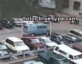

|  |
The monitors will also send the images to Web sites, where the public will be able to check weather, beach, crowd and parking conditions via still images that will be updated every five minutes. The grant comes from a Clinton-era program called Technology Opportunities, aimed at using the Internet for communal good. " But the byproduct is the government watching while Californians tan. The public will get up-to-the-minute information about California swimming holes. Environmentalists will get new data on "coastal erosion. |